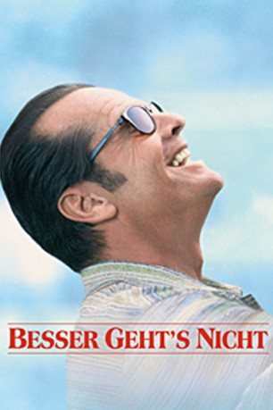

Alternativ: As Good as It Gets
Auszeichnungen: 2 Oscars gewonnen für 5 Oscars nominiert 3 GoldenGlobes gewonnen
 
 IMDB-Wertung: 7.7 / 10
IMDB-Wertung: 7.7 / 10  Metascore:
Metascore: 
Melvin Udall ist ein brillianter Autor von Liebesromanen in New York. Gleichzeitig ist er aber auch ein Misantroph, ein Grobian und ein Neurotiker, versehen mit einer ganzen Reihe seltsamer Ticks und Vorurteilen und ungeübt im Umgang mit anderen Menschen. Sein einziger menschlicher Kontakt ist seine Stammkellnerin in seinem Stammrestaurant, die jedoch andere Sorgen als ihn hat. Auch seinem schwulen Nachbarn Simon Bishop gegenüber ist er äußerst unfreundlich, muß aber eines Tages den verhaßten Hund des Nachbarn zur Pflege aufnehmen. Und der Hund schafft, was niemand für möglich gehalten hat: Melvins Panzer beginnt zu bröckeln; er fängt an, Simon zu helfen, als dieser in Not gerät und bemüht sich, seine Gefühle für die Kellnerin Carol zu formulieren. Natürlich hat er da noch eine Menge aufzuholen, doch er bemüht sich, so gut es geht.
Jahr: 1997
Dauer: 139 Minuten
FSK: 6
Land: USA Studio: TriStarTonspuren: DD5.1 - ,
Untertitel: Deutsch,
Auflösung: 1080p (1920x1040) Größe: 10444 MB
Regisseur:  James L. Brooks
James L. Brooks
Drehbuch: Mark Andrus, Mark Andrus, James L. Brooks
Soundtrack: Hans Zimmer
Darsteller:
 Jack Nicholson als Melvin Udall
Jack Nicholson als Melvin Udall Helen Hunt als Carol Connelly
Helen Hunt als Carol Connelly Greg Kinnear als Simon Bishop
Greg Kinnear als Simon Bishop Cuba Gooding Jr. als Frank Sachs
Cuba Gooding Jr. als Frank Sachs Skeet Ulrich als Vincent
Skeet Ulrich als Vincent Shirley Knight als Beverly
Shirley Knight als Beverly Yeardley Smith als Jackie
Yeardley Smith als Jackie Brian Doyle-Murray als Handyman
Brian Doyle-Murray als Handyman Missi Pyle als Cafe 24 Waitress
Missi Pyle als Cafe 24 Waitress Leslie Stefanson als Cafe 24 Waitress
Leslie Stefanson als Cafe 24 Waitress Tara Subkoff als Cafe 24 Waitress
Tara Subkoff als Cafe 24 Waitress Shane Black als Cafe 24 Manager
Shane Black als Cafe 24 Manager Peter Jacobson als Man at Table
Peter Jacobson als Man at Table Lisa Edelstein als Woman at Table
Lisa Edelstein als Woman at Table Randall Batinkoff als Carol's Date
Randall Batinkoff als Carol's Date Jesse James als Spencer Connelly
Jesse James als Spencer Connelly Jamie Kennedy als Street Hustler
Jamie Kennedy als Street Hustler Maya Rudolph als Policewoman
Maya Rudolph als Policewoman Lawrence Kasdan als Dr. Green
Lawrence Kasdan als Dr. Green Wood Harris als Cafe 24 Busboy
Wood Harris als Cafe 24 Busboy Julie Benz als Receptionist
Julie Benz als Receptionist Harold Ramis als Dr. Bettes
Harold Ramis als Dr. Bettes Tom McGowan als Maitre D'
Tom McGowan als Maitre D' Matt Malloy als Men's Store Salesman
Matt Malloy als Men's Store Salesman Maurice LaMarche als Fred Bishop - Simon's Dad on Phone , uncredited
Maurice LaMarche als Fred Bishop - Simon's Dad on Phone , uncreditedDatei: X:\1997\Besser geht's nicht (1997, FSK6, 1920x1040).mkv seit 31.03.2015
Festplatte: HD 1996-2002
 Es gibt insgesamt 83 Filme in der Gruppe '1997'
Es gibt insgesamt 83 Filme in der Gruppe '1997'